18 页 · 儿童蜡笔涂鸦
大纸牌，小数字
Big Cards, Little Numbers · 英文原版
哪吒画了一张写着3的大卡片和一张写着5的小卡片。悟空觉得大卡片一定赢，可玉兔用木珠一摆，五颗比三颗多。卡片大也好，小也好，数字告诉我们有几个。
翻开故事 ↗ 悟空和朋友们
悟空和朋友们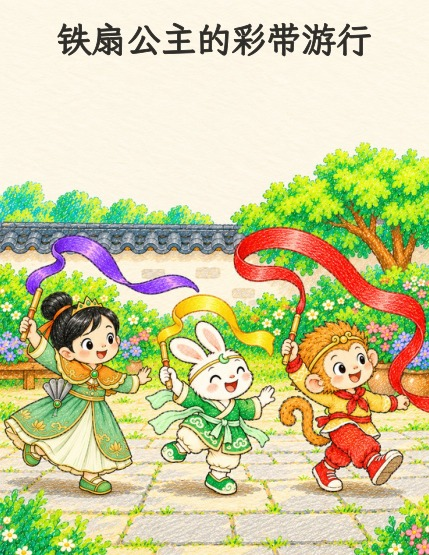
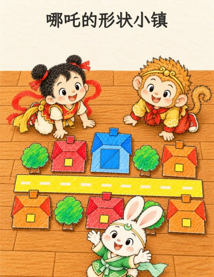
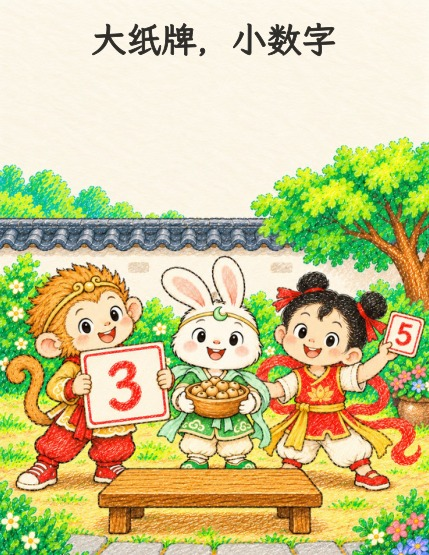
免费下载，也欢迎打印成小书。 24 本故事
18 页 · 儿童蜡笔涂鸦
Big Cards, Little Numbers · 英文原版
哪吒画了一张写着3的大卡片和一张写着5的小卡片。悟空觉得大卡片一定赢，可玉兔用木珠一摆，五颗比三颗多。卡片大也好，小也好，数字告诉我们有几个。
翻开故事 ↗18 页 · 儿童蜡笔涂鸦
Princess Iron Fan’s Ribbon Parade · 英文原版
铁扇公主要办彩带游行。悟空的红彩带卷成一团，看起来最短，他又想偷偷往前挪。大家把彩带从同一条线开始摆好，才看清短的、长一些的和最长的。
翻开故事 ↗18 页 · 儿童蜡笔涂鸦
哪吒的纸小镇还缺一扇方窗户，盒子里却只剩两块蓝色三角形。悟空先把它们当成尖尖的帽子，玉兔教大家转一转，长边一对上就拼成了方块！同样两块还能拼成一个大三角形。
翻开故事 ↗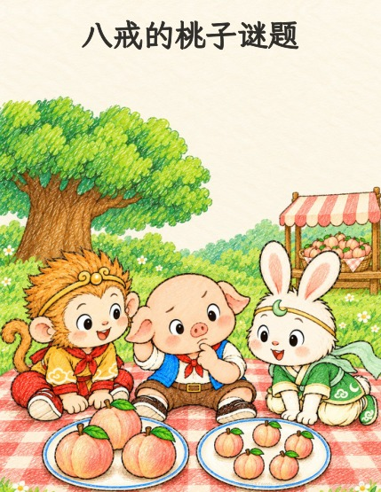
18 页 · 儿童蜡笔涂鸦
八戒觉得三个大桃子一定比五个小桃子多。悟空和玉兔把桃子一对一对排好来比，八戒终于明白：不管大还是小，一个桃子就是一个。
翻开故事 ↗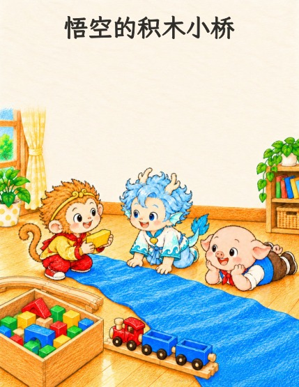
18 页 · 儿童蜡笔涂鸦
Wukong and the Block Bridge · 英文原版
小火车要过一条蓝布小河。悟空和敖丙用不一样的积木量，说法不一样；八戒拿来一样大的积木，一块挨一块不留空，量出河有四块积木那么宽，再找到合适的木板搭成小桥。
翻开故事 ↗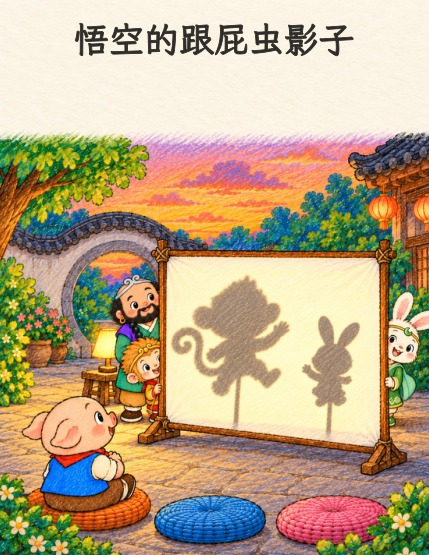
18 页 · 儿童蜡笔涂鸦
Wukong and the Copycat Shadow · 英文原版
院子里演影子戏，悟空以为有个大个子在学他。玉兔告诉他，那是他的影子：他挡住了光。纸偶离灯近，影子就变大；离灯远，影子就变小。灯一关，学他的朋友也回家了。
翻开故事 ↗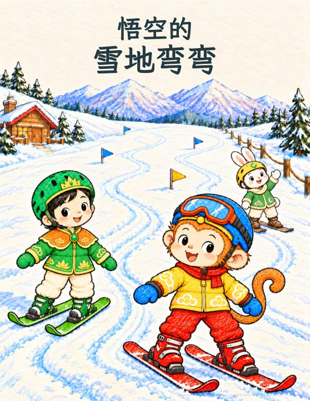
18 页 · 儿童蜡笔涂鸦
Wukong and the Snowy Zigzags · 英文原版
悟空和铁扇公主一起学滑雪，跌坐进软雪，再一点点练会转弯和停下。玉兔在旁加油，最后大家分享暖热可可和小鱼饼干。
翻开故事 ↗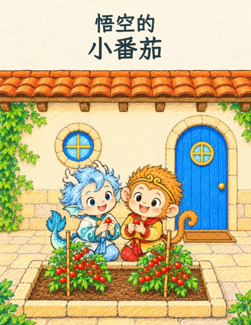
18 页 · 儿童蜡笔涂鸦
Wukong and the Tiny Tomatoes · 英文原版
悟空和敖丙一起种小番茄，浇水、耐心等待。敖丙的小雨云来帮忙，两位好朋友终于分享了甜甜的收获。
翻开故事 ↗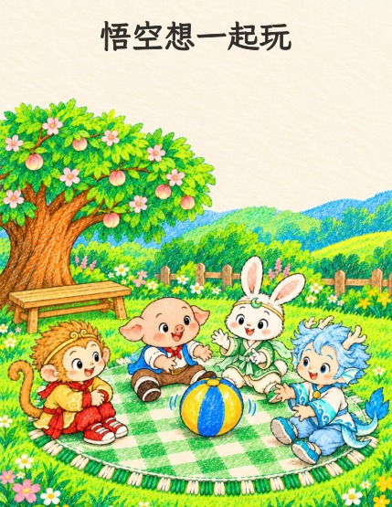
18 页 · 儿童蜡笔涂鸦
Wukong Wants to Play Too · 英文原版
八戒、玉兔和敖丙围成一圈玩滚球。悟空太想一起玩，一下冲进去把球抱住了。沙僧教他换一种办法：看一看，问一问，等一等。很快，圆圈里就有了每个人的位置。
翻开故事 ↗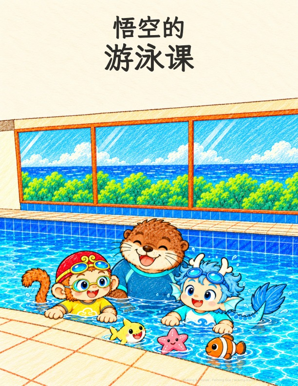
22 页 · 儿童蜡笔涂鸦
悟空想学游泳，却觉得泳池有点大。在教练陪伴和敖丙鼓励下，他练习吹泡泡、漂浮和踢腿，终于自己向前游了一小段。
翻开故事 ↗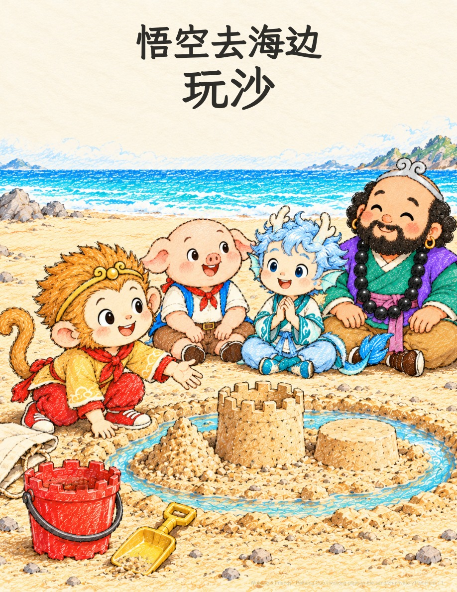
18 页 · 儿童蜡笔涂鸦
Wukong Plays in the Sand · 英文原版
悟空和朋友们先用干沙堆塔，沙子却散了；水加多了又成了沙汤。大家调整方法，终于一起堆起沙塔。最后，悟空发现鞋里也藏着一座小山。
翻开故事 ↗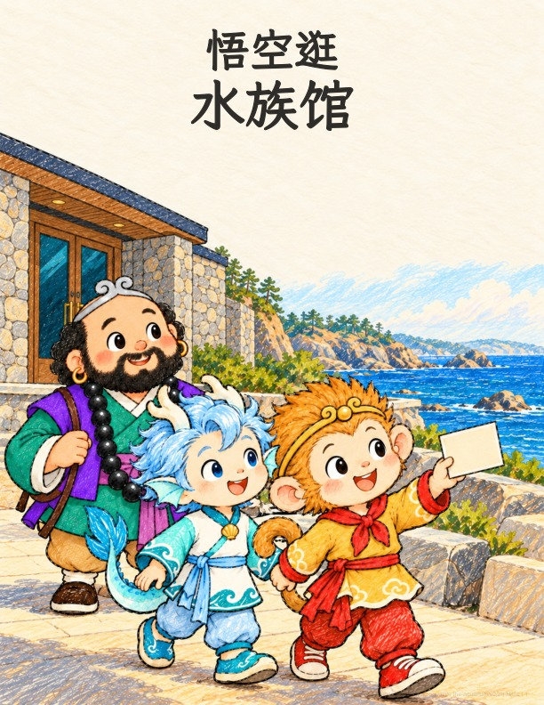
22 页 · 儿童蜡笔涂鸦
Wukong Visits the Aquarium · 英文原版
悟空和敖丙、沙僧一起逛水族馆。他们看海带、躲藏的小鱼、水母和海獭，最后悟空把三样喜欢的东西画在卡片上。
翻开故事 ↗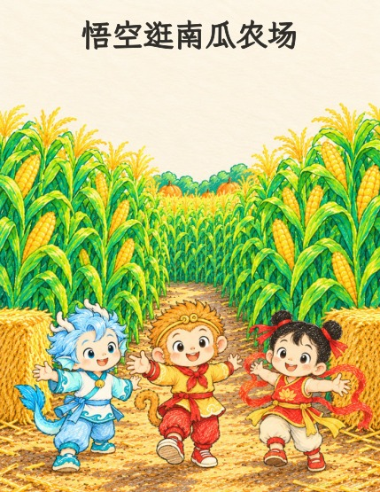
18 页 · 儿童蜡笔涂鸦
Wukong Visits the Pumpkin Patch · 英文原版
悟空、敖丙和哪吒走进通往南瓜田的玉米迷宫。哪吒冲在前面，结果又绕回了入口。大家改成找路上的标记：到了稻草人往左拐，到了南瓜堆往右拐，一直往前走，最后每人都挑到一个南瓜。
翻开故事 ↗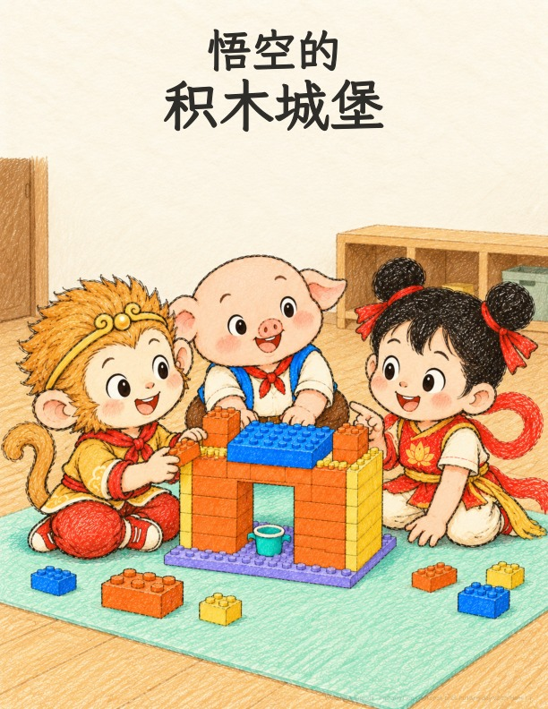
22 页 · 儿童蜡笔涂鸦
Wukong’s Brick-Building Day · 英文原版
悟空和朋友们一起搭积木城堡。他们想办法解决门口太窄的问题，让大家都能进来。
翻开故事 ↗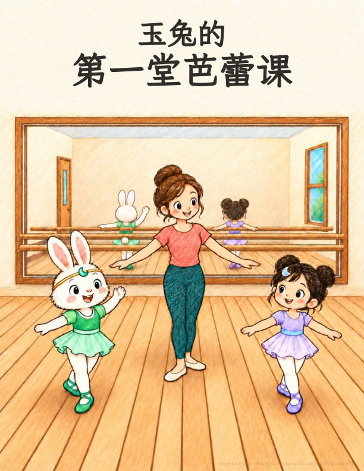
18 页 · 儿童蜡笔涂鸦
Jade Rabbit’s First Ballet Class · 英文原版
玉兔第一次上芭蕾课，学小步、慢慢转身，还让耳朵跟着音乐跳舞。在嫦娥的陪伴下，她找到节奏，开心地行礼谢幕。
翻开故事 ↗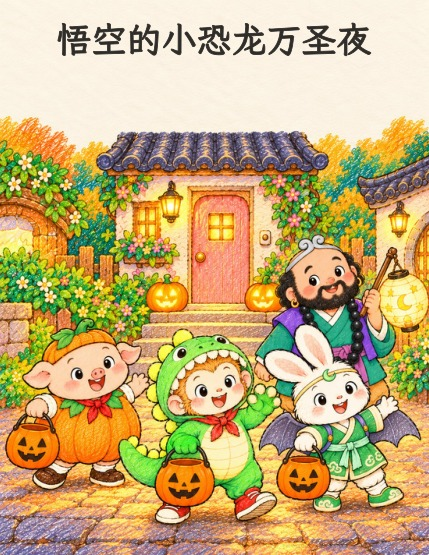
18 页 · 儿童蜡笔涂鸦
Wukong’s Little Dinosaur Halloween · 英文原版
悟空穿上新的恐龙装，练了一声大大的“嗷——呜！”。可第一家开门的是一只小小的刺猬，悟空换成小小声的“嗷呜”。按门铃、只拿一颗、说谢谢，回家还把糖分给陪他走了一路的沙僧。
翻开故事 ↗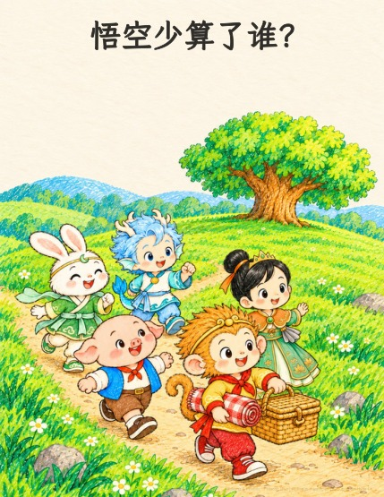
18 页 · 儿童蜡笔涂鸦
Wukong’s Missing Picnic Cup · 英文原版
悟空给野餐的朋友们摆杯子：一、二、三、四。可他自己坐下来，手里却空空的！大家再数一数，原来他少算了一个朋友——就是他自己。
翻开故事 ↗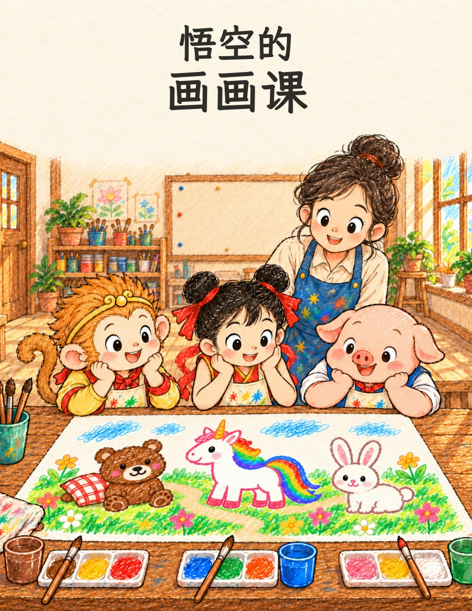
18 页 · 儿童蜡笔涂鸦
Wukong’s Painting Class · 英文原版
悟空把一团棕色颜料变成小熊。哪吒画彩虹独角兽，猪八戒画兔子，大家一起完成一幅快乐的画。
翻开故事 ↗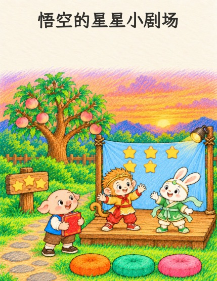
18 页 · 儿童蜡笔涂鸦
悟空要办故事会，在幕布上贴了六颗纸星星，玉兔又带来两颗，一共八颗。入口也想要星星，他们从幕布上拿走三颗：幕布上还剩五颗，合起来还是八颗。八戒还想用自己的圆肚子当月亮呢！
翻开故事 ↗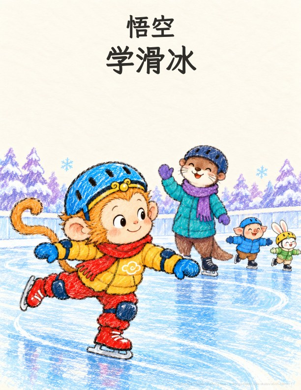
18 页 · 儿童蜡笔涂鸦
Wukong’s Slippy-Slide Skates · 英文原版
小脚像坐上小雪橇。摔一跤，再试一次！
翻开故事 ↗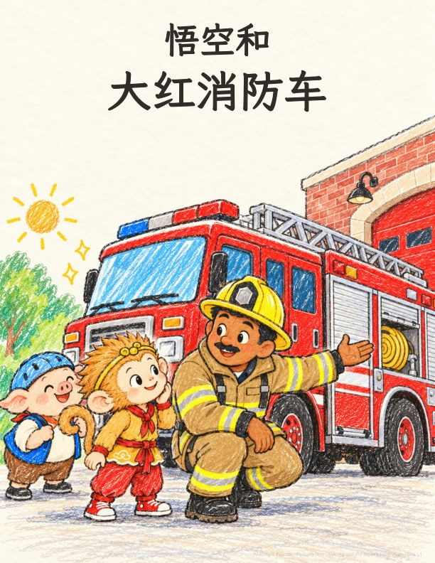
18 页 · 儿童蜡笔涂鸦
Wukong and the Big Red Truck · 英文原版
跟着消防员 Ben，走近一辆很酷的大红消防车。
翻开故事 ↗
18 页 · 儿童蜡笔涂鸦
Wukong’s Wibble-Wobble Ride · 英文原版
酷酷的自行车骑起来，却有些摇摇晃晃！
翻开故事 ↗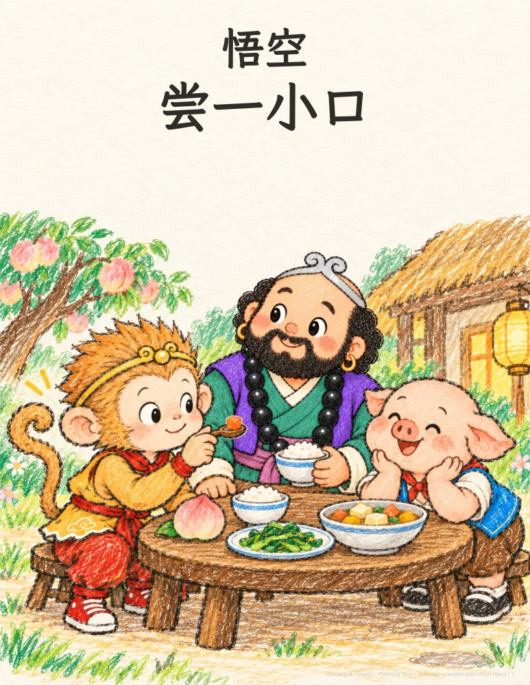
12 页 · 儿童蜡笔涂鸦
Sun Wukong’s One Little Bite · 英文原版
从一小口新味道，到一顿暖暖的晚餐。
翻开故事 ↗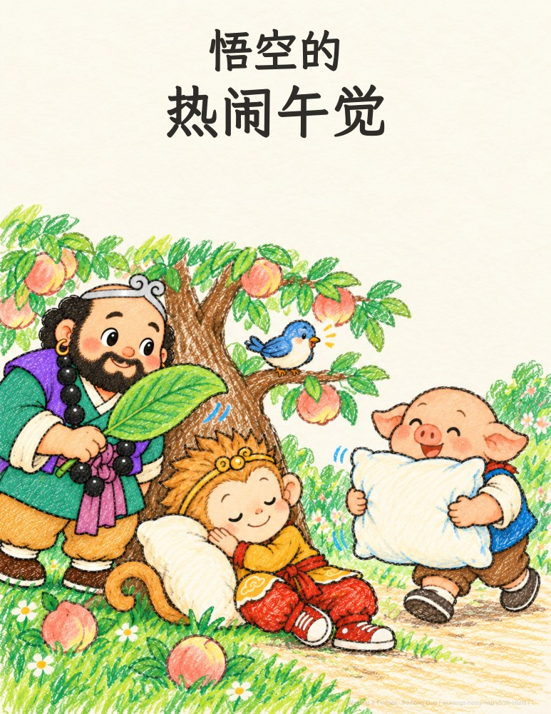
12 页 · 儿童蜡笔涂鸦
悟空想睡午觉，可朋友们的好意有一点点吵。
翻开故事 ↗没有找到这个故事，试试别的关键词吧。
简短的故事句子，适合亲子慢慢共读，也适合刚开始认字的小朋友。
八戒是悟空最好的朋友之一。朋友们互相照顾，也允许彼此按照自己的节奏学习。
故事会用不同方式收尾：有时道声晚安，有时一起庆祝小进步，也有时留一个新念头陪伴入梦。
故事可以免费阅读和打印。如果你和孩子喜欢，欢迎支持我继续创作。
订阅故事更新，让新的小冒险来到你的阅读器。